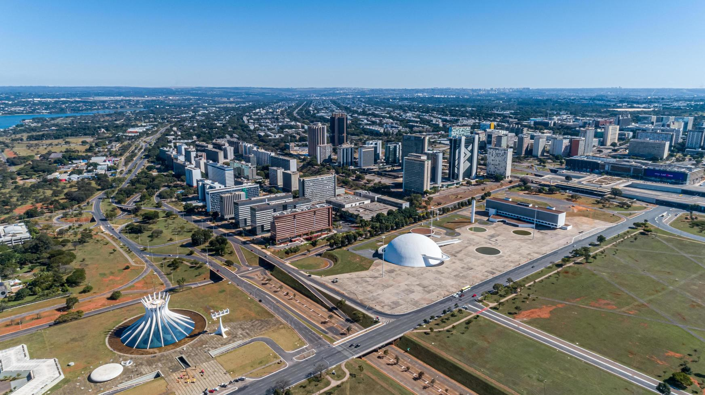
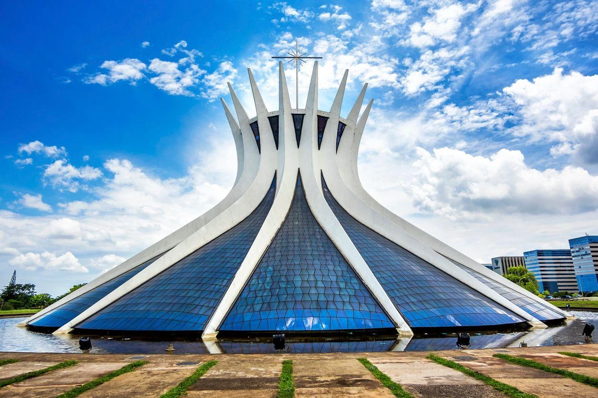
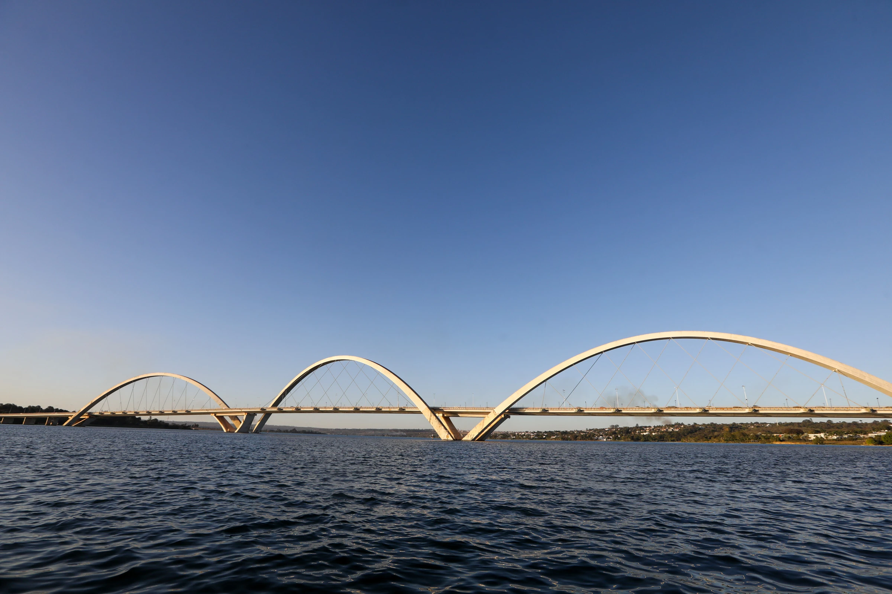
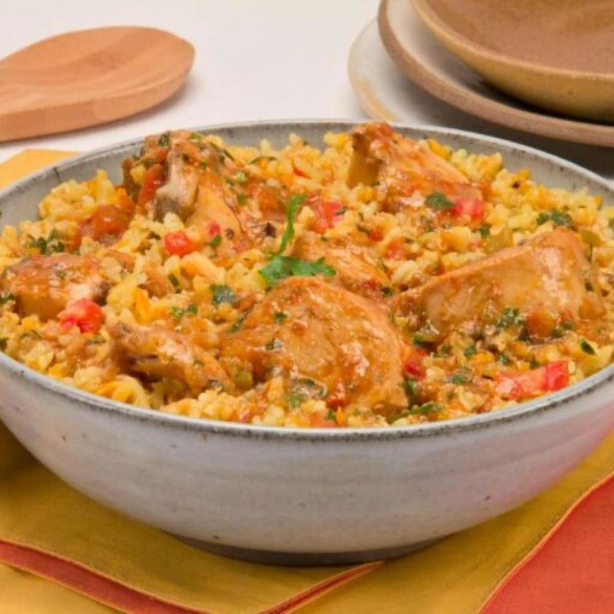
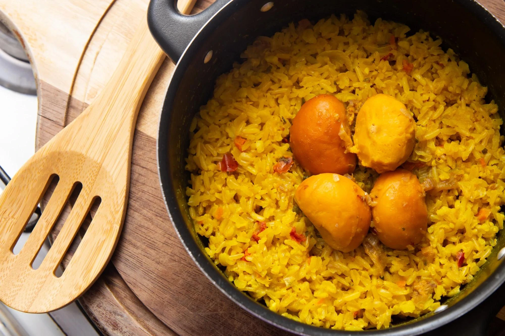
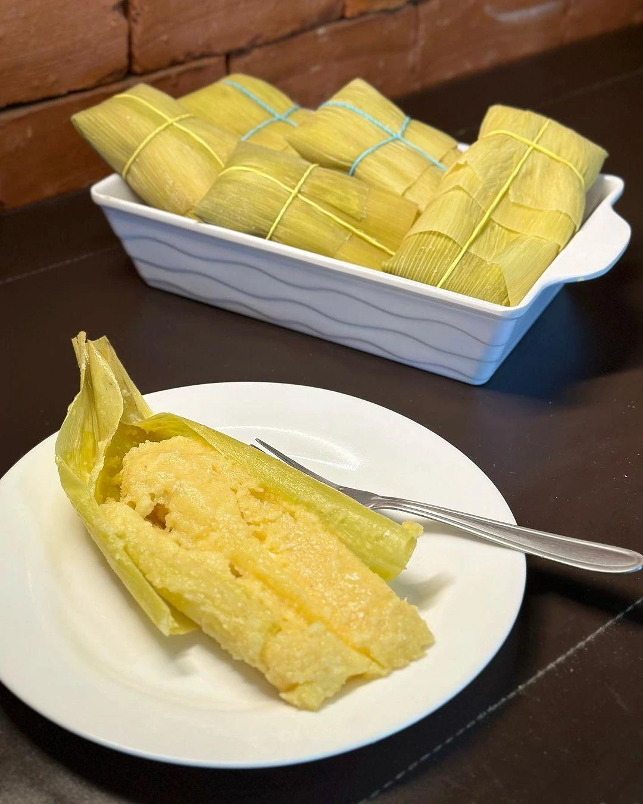

Sede Administrativa
Brasília (Capital do Brasil)
Conheça destinos, culturas, sabores e paisagens de todas as regiões
brasileiras.
Destinos, culturas e paisagens
incríveis te esperam.
O Distrito Federal está localizado na Região Centro-Oeste do Brasil e abriga a capital do país, Brasília. Inaugurada em 1960, Brasília foi planejada para ser a sede do governo federal e tornou-se um dos maiores símbolos da arquitetura e do urbanismo modernos. O Distrito Federal destaca-se por seus monumentos, áreas verdes, importância política e patrimônio cultural reconhecido internacionalmente.

Brasília (Capital do Brasil)
Aproximadamente 5.760 km²
Cerca de 3 milhões de habitantes
Centro-Oeste

O Congresso Nacional é um dos principais cartões-postais do país. Projetado por Oscar Niemeyer, abriga a Câmara dos Deputados e o Senado Federal.

A Catedral Metropolitana de Brasília é uma das obras arquitetônicas mais famosas do Brasil. Sua estrutura moderna e seus vitrais impressionam visitantes de todo o mundo.

A Ponte Juscelino Kubitschek é considerada uma das pontes mais bonitas do Brasil. Sua arquitetura moderna tornou-se um dos símbolos da cidade.

A galinhada é um dos pratos mais populares da região. Preparada com arroz, frango e temperos típicos, é bastante apreciada pelos moradores do Distrito Federal e de Goiás.

Prato tradicional do Centro-Oeste, combina arroz com pequi, fruto típico do Cerrado conhecido por seu sabor marcante.

Feita à base de milho, a pamonha pode ser doce ou salgada e é muito consumida na região, especialmente em festas e eventos tradicionais.
O Distrito Federal possui clima tropical de altitude, com duas estações bem definidas: uma seca e outra chuvosa. Os meses de maio a setembro costumam apresentar clima mais seco e agradável para passeios.
O Distrito Federal possui clima tropical de altitude, com duas estações bem definidas: uma seca e outra chuvosa. Os meses de maio a setembro costumam apresentar clima mais seco e agradável para passeios.
O Plano Piloto concentra os principais monumentos, museus e atrações históricas. Para quem gosta de natureza, o Lago Paranoá e os parques da cidade são excelentes opções.
O Plano Piloto concentra os principais monumentos, museus e atrações históricas. Para quem gosta de natureza, o Lago Paranoá e os parques da cidade são excelentes opções.
A culinária do Distrito Federal recebeu influências de todas as regiões do Brasil devido à diversidade de sua população. Vale a pena experimentar pratos típicos do Cerrado, especialmente aqueles preparados com pequi e milho.
A culinária do Distrito Federal recebeu influências de todas as regiões do Brasil devido à diversidade de sua população. Vale a pena experimentar pratos típicos do Cerrado, especialmente aqueles preparados com pequi e milho.